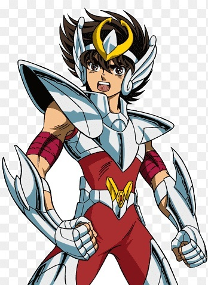

Sobre este quiz
O nosso quiz de fã de anime foi criado para testar os limites do seu conhecimento, indo muito além do básico.
Prepare-se para enfrentar perguntas que desafiam a sua memória sobre detalhes sutis, reviravoltas marcantes e curiosidades que só quem realmente presta atenção consegue notar.
Nesta jornada, exploramos desde os clássicos lendários que definiram gerações até os lançamentos mais recentes que estão dominando as temporadas.
Seja você um fã de batalhas épicas de Shonen ou das tramas profundas de Seinen, há um desafio esperando por você em cada etapa.
Convide os seus amigos, compare as pontuações e veja quem detém o título de maior conhecedor de animes do grupo.
Este é o momento de mostrar que toda aquela maratona valeu a pena e que nenhum detalhe técnico ou referência obscura passa despercebida pelos seus olhos.
1. Em "Naruto Shippuden", qual é o nome do jutsu proibido do clã Uchiha que permite ao usuário reescrever a realidade, ao custo da sua própria visão?
2. No anime "One Piece", o primeiro membro a se juntar à tripulação de Luffy (Chapéu de Palha) foi ____________.
3.Qual é o nome do Shinigami que deixa o Death Note cair no mundo dos humanos?.
4. Em YuYu Hakusho, em que data o mangá original escrito por Yoshihiro Togashi começou a ser serializado na revista Weekly Shōnen Jump no Japão?
5. Em Dragon Ball Z, quais foram os dois primeiros a se transformar em Super Saiyajin durante a saga de Frieza?
6. Envie uma imagem do seu personagem favorito de Hunter x Hunter.
7. Selecione no menu, qual o anime você mais gostou.
Qual o nome do personagem abaixo?

Tabela de Pontuação
| Pontos | Resultado |
|---|---|
| 0-2 | Tem muito que aprender! |
| 3-5 | Pontos de principiante |
| 6-7 | Está a nascer um Herói |
| 8 | Parabéns Otaku!!! |
| Pronto para próxima aventura? | |
Lista da verdade
Clique para ver as respostas
- Amaterasu
- Zoro
- Ryuk
- 20-11-1990
- Vegeta e Goku
- Todos Certos
- Todos Corretos
- Seiya